Chapter 9 Creating graphics with ggplot2
Visualizing raw data and data summaries as graphics is key to EDA and communicating analysis results. This chapter introduces the ggplot2 package used to efficiently create beautiful and informative graphics. Unlike R’s base graphics and other graphics packages that focus on providing functions to produce specific types of graphics (e.g., scatter plot, histogram, line graph), ggplot2 takes a more flexible approach by defining and applying a grammar for constructing graphics.66
Like other tidyverse packages, Hadley Wickham is the lead author and developer of ggplot2. Hadley based his grammar for ggplot2 on earlier work in the book “Grammar of Graphics” (Wilkinson et al. 2005) that lays out a grammar to describe the fundamental features that underlie all statistical graphics. The gg in ggplot2 stands for Grammar of Graphics. Wickham (2010) defines the grammar used by ggplot2 and maps the grammar’s components to those proposed in Wilkinson et al. (2005).
The authoritative references for learning to use ggplot2 is the book “ggplot2: Elegant Graphics for Data Analysis” (Wickham, Navarro, and Pedersen 2023) and the extensive online reference.67 The aim of this chapter is to provide a brief introduction to the grammar components and how they work together to construct a graphic. This introduction will be done mostly through worked examples. We borrow heavily from the first chapter of Wickham, Navarro, and Pedersen (2023) and refer you to this excellent book to further develop your understanding. Additional learning resources are provided in Section 9.5.
9.1 Grammar components
Grammar, according to R. Johnson (1969), is the “art of expressing relations of things in construction.” In the ggplot2 context, “things” are data or data summaries visualized using geometric objects (e.g., points, lines, bars). “Expressing relations” between different data values is done using the geometric object’s aesthetic attributes (e.g., location, color, shape, size). The geometric objects are set within a 1- or 2-dimensional space defined using some coordinate system. In this way we are “constructing” a graphic to convey relationships within and across data or data summaries.
The construction proceeds in layers, where each each layer depicts one or more feature of the data we wish to visualize. The grammar components include the following.
geometries define the geometric objects seen in the graphic (e.g., points, lines, bars). Each geometry has a set of aesthetic attributes that map to data variable values. Different geometries can have different aesthetics.
mappings connect the data’s variables to aesthetic attributes of the geometric object (e.g., location, color, shape, size).
scales translate a variable’s values to visual representation (and vice versa). For example, scales assign a categorical variable’s value to a color or shape, or a continuous variable’s value to a location in the graphic’s 1- or 2-dimensional space.
statistical transformations (stats for short) summarize the data’s variables in some way. For example, if the desired graphic is a histogram of the number of trees by species, then stats summarize the input data to create the necessary tree count by species variables. Or stat might discretize a continuous variable’s values so they can be visualized as ordered categories (e.g., creating DBH classes like we saw in Section 8.3.
facets display a common graphic across panels each based on data subsets defined by one or more discrete variables. These are useful for visualizing how a variable’s values used to create the graphic differ across the discrete variable(s) values used to define the facets.
coordinates define the graphic’s coordinate system into which the geometric objects are placed. Typically this is a Cartesian coordinate system defined using a horizontal x-axis and a vertical y-axis, but there are other options, e.g., polar coordinates used for pie charts.
themes control the non-data elements of the graphic, like the font size, text placement, legend orientation, and background color. While the defaults in
ggplot2have been chosen with care, you may need to consult other references to create an attractive plot.
As we’ll see in the next few sections, a graphic may comprise multiple layers, with each depicting different features of the data. Often data are shared among layers, but that is not always the case. The next section provides some worked examples to help you get used to ggplot2 syntax.
9.2 An initial look
We motivate this initial ggplot2 exploration using the FEF dataset introduced in Section 1.2.1. Recall the FEF data were collected to create allometric equations that foresters could use to estimate tree component weight based on species and DBH. Here, we’ll work with a simplified version of the FEF data provided in “datasets/FEF_trees_simple.csv”. In this file, each row corresponds to a set of tree measurements and columns are as follows.
Speciestree species scientific name.DBH_cmDBH in centimeters.Height_mtotal tree height in meters.Stem_kgdry weight of main stem in kilograms.Otherwoody_kgdry weight of top and branch tree components in kilograms.
The code below loads the readr and ggplot2 packages, reads the simplified FEF data into fef, and prints the first few rows and columns.
#> # A tibble: 88 × 5
#> Species DBH_cm Height_m Stem_kg Otherwoody_kg
#> <chr> <dbl> <dbl> <dbl> <dbl>
#> 1 Acer rubrum 15.2 14.6 54.7 50.4
#> 2 Acer rubrum 17.5 14.6 62.3 60.8
#> 3 Acer rubrum 16.3 14.6 73.3 41.2
#> 4 Acer rubrum 16.5 14.9 53.6 52.3
#> 5 Acer rubrum 18.3 15.5 106. 52.5
#> 6 Acer rubrum 7.87 12.2 11.7 2.5
#> 7 Acer rubrum 5.08 9.30 3.2 2
#> 8 Acer rubrum 10.4 15.2 28.3 10.1
#> 9 Acer rubrum 6.10 8.53 5.5 2.5
#> 10 Acer rubrum 6.86 12.3 10.6 4.5
#> # ℹ 78 more rowsThe next several sections provide an applied look at grammar component’s role in constructing a basic graphic.
9.2.1 Geometries, mapping, and aesthetics
Scatter plots are a workhorse of data visualization and provide a good entry point to learning ggplot2. Let’s begin by making a scatter plot of DBH versus stem weight using the fef data.
Code for all ggplot2 graphics starts with ggplot() followed by layers and modifying functions added with the + operator. Use of the + operator underscores the constructive nature of ggplot2 graphics.
The code below includes a call to ggplot() with the data argument set to fef and the mapping argument set to aes(), which is used to connect variables with anticipated geometry’s aesthetics.68 Here, aesthetic x is mapped to DBH_cm and aesthetic y is mapped to Stem_kg. By itself, the call to ggplot() doesn’t define the type of graphical display to draw; hence, the resulting graphic is empty except for the axes defined by the x and y aesthetics. The scales grammar component is at work here applying defaults to set axes extents and value breaks, and determining many other visual features.
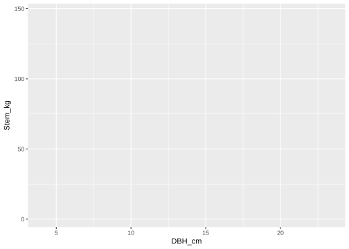
To draw objects in the graph plane we need to specify a geometry that will do something with the supplied x and y aesthetics.69 The desired scatter plot has points drawn at x and y value pairs. Point geometries are drawn using geom_point(). The code below adds (using the + operator) the point geometry.

Looking at the geom_point() manual page, you’ll see the first two arguments are mapping and data. By default the values for these arguments are inherited from the initial call to ggplot().70 So, alternatively, values for mapping (and even data) can be specified in geom_point(), and similarly for other geometries. The code below produces the same output as above, but specifies mapping within geom_point().
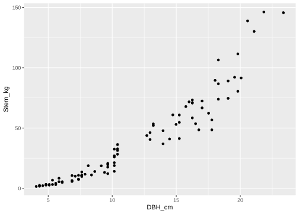
Return again to the geom_point() manual page and scroll down to the Aesthetics section. This section lists all the aes() arguments used to map variables to point geometry features. Notice x and y are required, but all other aesthetics are optional.
Let’s map the point color to Species. To do so, we include color = Species in the point geometry’s aes() in the code below. Notice, in the resulting graphic a color scale for species and associated legend is automatically generated. Species is a categorical variable, hence scales selects a default discrete color scale. These, often very reasonable, default colors and legend placement decisions facilitate efficient exploration of data. Later, we’ll show how to override these and other defaults.
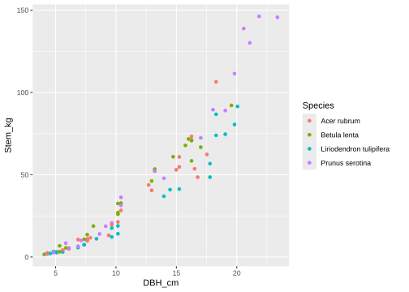
Recall from Section 4.3 discrete variables (e.g., integers or characters) can be represented as a factor. If you plan to represent integer or character variables as categories in your graphic, then it’s often useful to convert them to factors before sending them into ggplot(). One particularly motivating reason to convert your discrete variables to factors is that it gives you finer control over how the categories are ordered and labeled in the resulting legends and other graphic elements. As you’ll notice in the graphic above, the default is to list species in alphabetical order within the legend. Say, for some reason, we’d like them in reverse alphabetical order. This can be done by converting Species to a factor and specifying the factor levels in the order we wish for them to be displayed in the legend.71
fef <- fef %>%
mutate(Species = factor(Species,
levels = c("Prunus serotina",
"Liriodendron tulipifera",
"Betula lenta",
"Acer rubrum")))
fef %>%
glimpse() # Check out the Species factor.#> Rows: 88
#> Columns: 5
#> $ Species <fct> Acer rubrum, Acer rubrum, Acer …
#> $ DBH_cm <dbl> 15.240, 17.526, 16.256, 16.510,…
#> $ Height_m <dbl> 14.6304, 14.6304, 14.6304, 14.9…
#> $ Stem_kg <dbl> 54.7, 62.3, 73.3, 53.6, 106.4, …
#> $ Otherwoody_kg <dbl> 50.4, 60.8, 41.2, 52.3, 52.5, 2…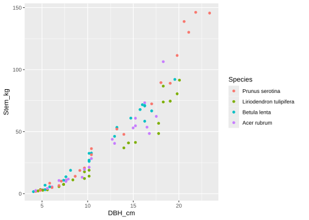
Next, let’s map color to the continuous Height_m variable by setting color = Height_m in the point geometry’s aes().
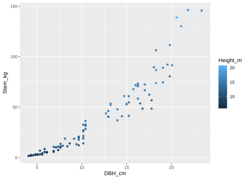
As you can see by the resulting legend colorbar, when the color aesthetic is mapped to a continuous variable, e.g.,Height_m, scales assign each possible value in the variable’s range to a color along a color gradient.72 As expected, the graphic above shows that taller trees have larger DBH and stem weight.
As you’ve seen in the geom_point() manual page, there are many possible aesthetics to which we can map a variable. The aesthetic’s defaults are set up to handle “reasonable” mappings. Here reasonable means that scales can make an interpretable mapping between the variable’s type (i.e., categorical or continuous) and aesthetic. Above we mapped species (categorical) to color and height (continuous) to color, both resulted in reasonable mappings. Mapping species or height to the size aesthetic will also work by default.73 The shape aesthetic is well suited for species, but it’s not immediately apparent how to map a shape to height as suggested by the error thrown by the code below.
#> Error in `geom_point()`:
#> ! Problem while computing aesthetics.
#> ℹ Error occurred in the 1st layer.
#> Caused by error in `scale_f()`:
#> ! A continuous variable cannot be mapped to the shape aesthetic.
#> ℹ Choose a different aesthetic or use `scale_shape_binned()`.In addition to being reasonable, the geometry must also be able to display the aesthetic. For example, the fill aesthetic is only applicable for geom_point() if the point shape has a fill aesthetic.74 The code below changes the default point shape to 21 (which has color, fill, and stroke aesthetic), we map fill to Height_m and set values for size, color, and stroke to be the same for all points. The key thing to notice here is size, color, and stroke aesthetics are specified outside of aes() and, hence, not mapped to a data variable name.
ggplot(data = fef) +
geom_point(mapping = aes(x = DBH_cm, y = Stem_kg, fill = Height_m),
shape = 21, size = 5, color = "black", stroke = 2) 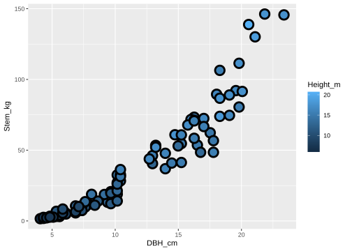
Next let’s map height to color and species to shape. Note we also change the size of the points to a static value.
ggplot(data = fef) +
geom_point(mapping = aes(x = DBH_cm, y = Stem_kg, color = Height_m,
shape = Species), size = 2) 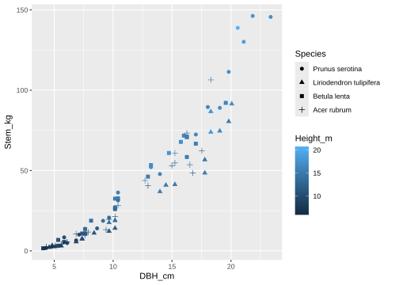
While the figure above compactly communicates several different relationships—via color and shape scales—consideration should always be given to the audience. It takes time and thought to creating clear and concise graphics that efficiently communicate information. Always keep your audience in mind. What are the key points you want to communicate and are those points clearly portrayed in the graphic? How hard does the audience have to work to understand what you’re trying to communicate? Would multiple graphics more clearly communicate key information? In some cases, portraying multiple scales in a single graphic is the perfect way to communicate information, in other cases it might be preferable to offer scale specific graphics.
The ggplot2 package is a tool for a broad range of tasks. At one extreme, the package offers functionality to produce publication quality sophisticated and beautiful graphics, at the other extreme it’s a tool for rapid data exploration used to identify errors, features, patterns, and possible avenues for analysis. In the latter extreme, there’s an audience of one—yourself—and the focus is on efficient data exploration using as little code as possible.
You can create new variables directly within aes(). For example, say we wanted to compare Prunus serotina to other species in the scatter. Math and logical operators are evaluated on variables in aes() prior to assigning them to the aesthetic. This is illustrated in the code below, where the logical Species == "Prunus serotina" result is assigned to color and a discrete scale is rendered.75
ggplot(data = fef) +
geom_point(mapping = aes(x = DBH_cm, y = Stem_kg,
color = Species == "Prunus serotina"),
size = 3) 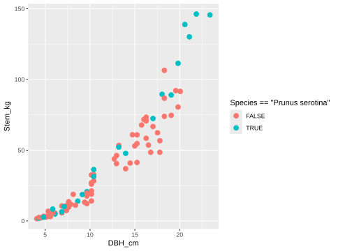
The scatter plot above makes it instantly clear that Prunus serotina was sampled fairly evenly across the DBH range and other species were not sampled beyond about 20 cm DBH and 125 kg stem weight. Notice the efficiency of creating new variables within aes() compared with creating a new variable and adding it to fef via mutate() prior to calling ggplot(). The ability to create new variables within aes() on-the-fly and with good defaults for a graphic’s numerous visual features is key to efficient EDA.
Additional geometry layers are added with the + operator and inherit data and aesthetic mappings by default. For example, let’s add a smooth line geometry layer over the points. The code below uses geom_smooth() to add the desired line. There are a lot of steps going on behind the scenes here. For example, the stats package is fitting a statistical model to the x and y mappings to estimate the smooth trend line with an associated measure of uncertainty. Here, the trend line appears in a default color blue and the confidence interval band in gray.

Notice the smooth line above is layered over the points. This layer order is because geom_smooth() is added after geom_point()—simply switch the layer order if you’d like the points over the line.
The code below places the smooth line beneath the points, adds the species color aesthetic, and removes the confidence interval band by setting the geom_smooth() se argument to FALSE. Notice, the color aesthetic is now applied to both the point and line geometries such that a separate smooth line is produced for each species.
ggplot(data = fef,
mapping = aes(x = DBH_cm, y = Stem_kg, color = Species)) +
geom_smooth(se = FALSE) +
geom_point()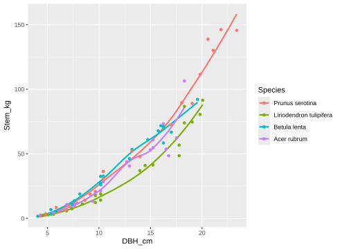
9.2.2 Scales
Let’s work more directly with scales. Scales translate a variable’s values to visual representation (and vice versa). In the previous example, we had mapping = aes(x = DBH_cm, y = Stem_kg, color = Species), which suggests we could use scales to modify the default representation for x, y, and color aesthetics.
Most functions that modify scales are of the form scale_*() where the asterisk is the name of the scale and, usually, some additional description of the scale type or how you intend for it to be modified.76
Let’s begin with changing color scale defaults. Creating and applying color palettes to maximize visual appeal, accessibility, and informative transfer is a science in of itself (see, e.g., references on color theory). Broadly there are three types of color palettes used for data visualization.
Qualitative – used for discrete unordered numeric or categorical variables. Discrete values are paired with a color and all colors receive the same interpreted weight. Colors are typically chosen to be distinct from one another to emphasize the lack of natural ordering and improve visual differentiation among values.
Sequential – used for continuous numeric, or discrete ordered numeric or categorical variables. Continuous numeric values are represented with a color gradient depicting a continuum from high to low or low to high. Similarly, discrete ordered values are paired with colors in a color gradient, with colors chosen to depict the incremental value change from one discrete value to the next.
Divergent – used for continuous numeric, or discrete ordered numeric or categorical variables that increase and decrease from a neutral or central value. Values are represented using two diverging color gradients. The gradients start at a specified central value and extend to two extremes.
Species is an unordered categorical variable. When color = Species the default color scale is implicitly set with scale_color_discrete().77 We make the call to scale_color_discrete() explicit below, again the defaults are used when no arguments are specified.
ggplot(data = fef,
mapping = aes(x = DBH_cm, y = Stem_kg, color = Species)) +
geom_point() +
scale_color_discrete()
As illustrated in the code and output above, defaults are used if no arguments are passed into the scale function. Let’s take a look at the scale_color_discrete() manual page, via ?ggplot2::scale_color_hue, to get a sense of defaults that can be changed.78 Scroll down in the manual page and read about the name argument. All scale functions have a name argument and it’s used to provide a better title for the given aesthetic in the graphic. The default for name is the aesthetic’s variable name, e.g., the variable name mapped to color is used as the color legend title and variables mapped to x and y are used for the respective axis title (you can see this in the graphic above where x and y titles are DBH_cm and Stem_kg, respectively, and the color legend title is Species). The code below changes the color scale name from its default to “Scientific name”.
ggplot(data = fef,
mapping = aes(x = DBH_cm, y = Stem_kg, color = Species)) +
geom_point() +
scale_color_discrete(name = "Scientific name")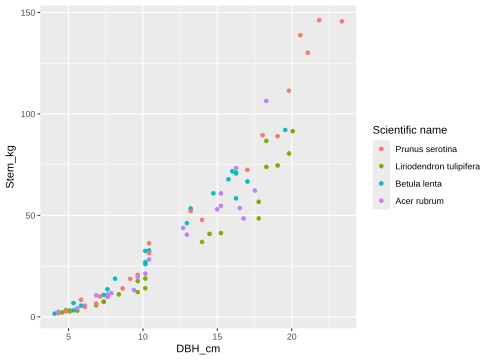
Next let’s modify the order that species appear in the legend. We saw earlier that order can be changed through the factor data type specification, but it can also be changed using the scale function’s limits argument. Returning to the manual page, notice an optional value for limits is “a character vector that defines possible values of the scale and their order.” We specify our desired species order below in the vector assigned to limits. For fun, we also remove the legend title by setting name to NULL (a title is not really needed here, species names and associated colors make the legend’s role self-evident).
ggplot(data = fef,
mapping = aes(x = DBH_cm, y = Stem_kg, color = Species)) +
geom_point() +
scale_color_discrete(name = NULL,
limits = c("Acer rubrum", "Betula lenta",
"Liriodendron tulipifera",
"Prunus serotina"))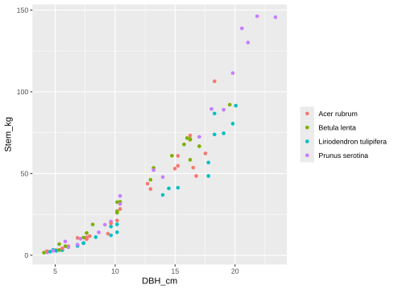
There are specialized scale functions available to simplify changing defaults and provide expanded options for creating interesting and informative features. For example, in the code below, scale_color_discrete() is replaced with scale_color_manual() that is used to set a qualitative color palette we defined in spp_col.79 Our chosen color pallete is passed to scale_color_manual() via the values argument. Additionally, we again use the scale’s name argument to change the default title “Species” to “Scientific name”.
spp_col <- c("Acer rubrum" = "firebrick", "Betula lenta" = "plum",
"Liriodendron tulipifera" = "aquamarine",
"Prunus serotina" = "steelblue")
ggplot(data = fef,
mapping = aes(x = DBH_cm, y = Stem_kg, color = Species)) +
geom_point() +
scale_color_manual(name = "Scientific name", values = spp_col)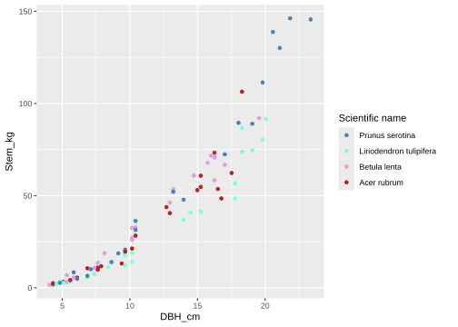
These colors are pretty nice, however, we might be better off leaving color palette selection to the experts. There are several functions within ggplot2 that provide thoughtfully designed color palettes. The code below uses scale_color_brewer() to provide palettes selected by Cynthia Brewer, a highly accomplished cartographer well known for her ColorBrewer palettes.80 The palette argument within scale_color_brewer() accepts a palette name. For example, we selected the Set2 palette in the code below.81
ggplot(data = fef,
mapping = aes(x = DBH_cm, y = Stem_kg, color = Species)) +
geom_point(size = 3) +
scale_color_brewer(name = "Latin name", palette = "Set2")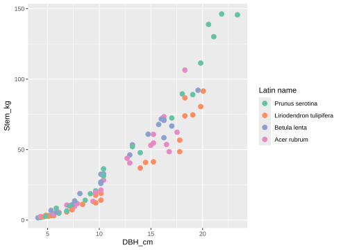
There are lots of exciting color palettes within ggplot2 and available as R packages created by color enthusiasts. For example, we enjoy using palettes from the American filmmaker Wes Anderson’s movies via the wesanderson package illustrated below.82
library(wesanderson)
ggplot(data = fef,
mapping = aes(x = DBH_cm, y = Stem_kg, color = Species)) +
geom_point(size = 3) +
geom_smooth(se = FALSE) +
scale_color_manual(name = "Latin name",
values = wes_palette("AsteroidCity1"))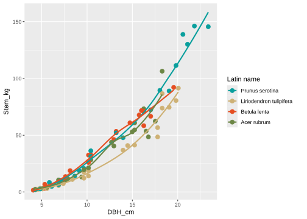
When a color aesthetic is mapped to a continuous variable, the variable’s values are associated with colors in a sequential or divergent gradient. We saw such a mapping previously when color = Height_m and the default colorbar gradient went from dark blue (small height values) to light blue (large height values).
We can select different built-in color gradients or create our own using a scale_*() function. For example, there are several excellent built-in continuous and divergent colorbrewer palletes to choose from via scale_color_brewer() or scale_fill_brewer(). Alternately, create your own using scale_*_gradient() for a two color gradient (low-high), scale_*_gradient2() for a diverging color gradient (low-mid-high), or scale_*_gradientn() for an n-color gradient, where * is either color or fill.
The example code below uses scale_fill_gradient() to create a two color gradient from hex color #E28A00 to #0201A5.83 Like many R functions, colors can be specified as quoted R color names or hex colors.
ggplot(data = fef,
mapping = aes(x = DBH_cm, y = Stem_kg, fill = Height_m)) +
geom_point(size = 5, shape = 21, color = "black") +
scale_fill_gradient(low = "#E28A00", high = "#0201A5")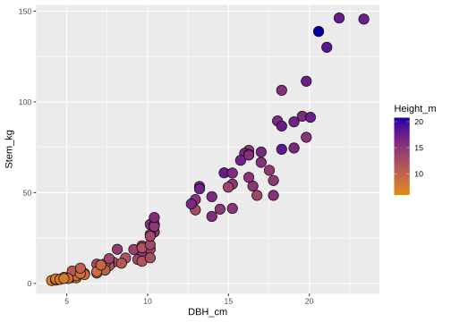
Just for fun, we’ll try the scale_fill_gradientn() function that builds a color gradient using any number of colors. The code below generates 10 colors from the wesanderson package Zissou1 palette. In the code, we also change the colorbar name to “Height (m)” and add breaks at 7, 13.5, and 20 cm.
ggplot(data = fef,
mapping = aes(x = DBH_cm, y = Stem_kg,fill = Height_m)) +
geom_point(size = 5, shape = 21, color = "black") +
scale_fill_gradientn(
name = "Height (m)",
breaks = c(7, 13.5, 20),
colors = wes_palette(name = "Zissou1", n = 10, type = "continuous")
) 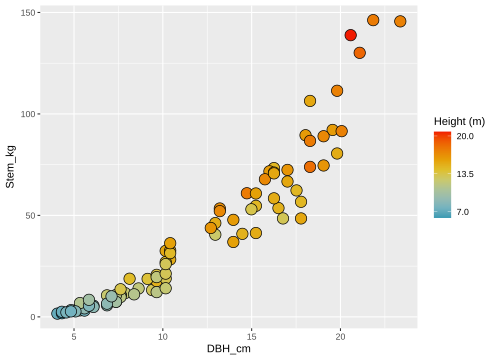
Changes to default scale behaviors for x and y aesthetics are also controlled with scale functions. Like color scales, the underlying data type determines the scale function. An axis is either continuous or discrete, where discrete subsumes both ordered and unordered categorical data types. For our scatter plot, both DBH_cm (x) and Stem_kg (y) are continuous, and can be modified via the scale_x_continuous() and scale_y_continuous() functions, respectively. Take a moment to look at the manual pages for these functions. The functions allow you to change the axis name, tick mark break number and location, limits, and many other defaults.
The code below uses x and y scale functions to display a more descriptive name, force an origin at zero, increase the maximum limit, and add more breaks. For illustration, x-axis breaks were provided explicitly via the breaks argument and the suggested number of y-axis breaks via the n.breaks argument. The limits argument takes a vector of length two that specifies the minimum and maximum axis value. The default plot includes a bit of padding on the axis ends to ensure data are positioned away from the axis limits. You can change this default behavior using the expand argument and can use the expansion() function to generate values to give to expand. We specify zero multiplicative and additive padding at the axis lower limit (i.e., the origin) and default padding at the axis upper limit (see ?ggplot2::expansion).
ggplot(data = fef,
mapping = aes(x = DBH_cm, y = Stem_kg, color = Species)) +
geom_point() +
scale_x_continuous(name = "DBH (cm)",
breaks = seq(0, 26, 2), limits=c(0, 26),
expand = expansion(mult = c(0, 0.05),
add = c(0, 0))) +
scale_y_continuous(name = "Stem weight (kg)",
n.breaks = 6, limits = c(0, 160),
expand = expansion(mult = c(0, 0.05),
add = c(0, 0)))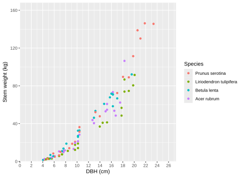
xlim() and ylim() provide a shortcut to specifying axis limits (e.g., we could use xlim(0, 26) in place of scale_x_continuous(limits=c(0, 26))). More generally, the lims() function is a shortcut to adjusting limits for any aesthetic. Similarly, shortcuts are provided for axis scale names via xlab() and ylab(), and a general function labs() used for any aesthetic. The code below uses labs() to change axis and color names. The labs() function can also be used to add descriptive text to other parts of the graphic such as a title, subtitle, and caption as illustrated below.84
ggplot(data = fef,
mapping = aes(x = DBH_cm, y = Stem_kg, color = Species)) +
geom_point() +
labs(x = "DBH (cm)", y = "Stem weight (kg)", color = "Latin name",
title = "Relationship between DBH and stem weight by species",
subtitle = "USDA Fernow Experimental Forest",
caption = "Data source: www.fs.usda.gov")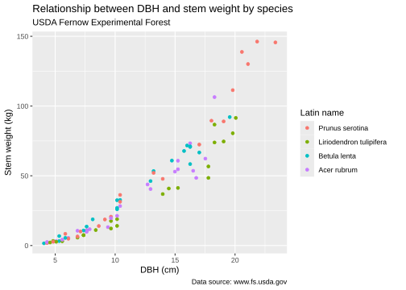
We often want to zoom into a region of a graphic to highlight a feature or get a better look at a relationship. There are two approaches to zooming.
Adjust axis scale limits to the data range of interest. This approach, however, can have unintended consequences and is not recommended. The unintended consequences occur because data outside an axis scale limit is removed from the data used to create the graphic, i.e., stats are computed using the visual data subset.
Set limits on the coordinate system. Setting limits on the coordinate system will zoom into the defined region (like you’re looking at it with a magnifying glass), and will not change the underlying data. In our current example, we’re using the Cartesian coordinate system, limits of which are set using
coord_cartesian().
The next two bits of code and output illustrate the zooming approaches and the unintended consequences of setting axis scale limits.
The smooth line in the graphic below shows the relationship between DBH and stem weight (along with an associated confidence interval) using the entire fef dataset.
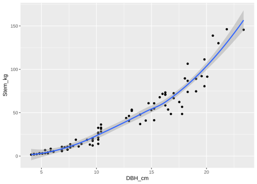
Say we want to get a better look at the relationship for trees with DBH between 18 and 24 cm. Using the first approach, we adjust axis scale limits using xlim() (we could have also used the limits argument in scale_x_continuous()). As the warning below the code suggests, this approach removes the 74 fef rows. These removed rows are trees with DBH_cm outside the 18 to 24 cm range.85 Hence, the smooth line is fit to only those trees within the limits and the result looks very different from the relationship of interest in the graphic above.
ggplot(data = fef, mapping = aes(x = DBH_cm, y = Stem_kg)) +
geom_point() +
geom_smooth() +
xlim(18, 24)#> Warning: Removed 74 rows containing non-finite outside
#> the scale range (`stat_smooth()`).#> Warning: Removed 74 rows containing missing values or
#> values outside the scale range (`geom_point()`).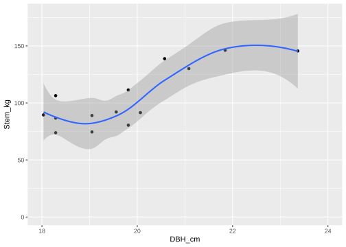
The code below uses the second and preferred approach. This is simply a zoom in on the 18 to 24 cm region of the graphic and uses the full fef dataset to estimate the smooth line and its confidence interval.
ggplot(data = fef, mapping = aes(x = DBH_cm, y = Stem_kg)) +
geom_point() +
geom_smooth() +
coord_cartesian(xlim = c(18, 24))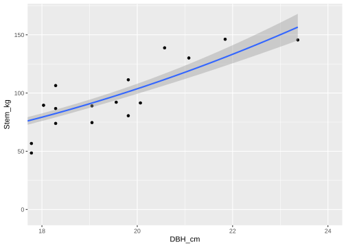
9.2.3 Guides and Themes
There are many other features that should be considered when making visually appealing, informative, and accessible graphics. These include legend layout, size, placement, orientation, and font type, size, placement, and the graphic’s general look and feel. Fine tuning scale defaults is accomplished via scale guides, whereas manipulating the graphic’s long list of non-data elements is done via themes.
A scale’s guide argument requires a guide object created using a guide function such as guide_axis(), guide_legend(), or guide_colorbar(). These and similar guide_*() functions can be specified in their respective scale functions or more generally for any scale within guides(). We most frequently use guide_legend(), guide_colorbar(), and similar legend type guides. For example let’s make the colorbar a bit taller and narrower via the barheight and barwidth arguments. See ?ggplot2::guide_colorbar() for arguments to make these and many other changes.
ggplot(data = fef,
mapping = aes(x = DBH_cm, y = Stem_kg, color = Height_m)) +
geom_point() +
scale_color_continuous(name = "Height (m)",
guide = guide_colorbar(barheight = 15,
barwidth = 1))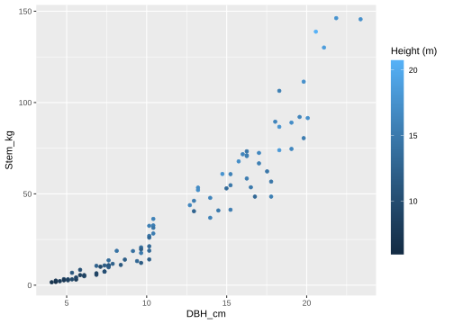
Arguments passed to the theme() function control a wide array of non-data graphic elements and is where we spend much of our time getting the graphic to look “just right.” Take a look at ?ggplot2::theme to get a sense of the defaults that you can change. There are also several readymade complete themes designed to set a suite of theme defaults, see ?ggplot2::theme_gray. We typically choose one of these complete themes then further modify it’s defaults via theme().
In the following example, we aim for a fairly polished looking scatter plot by adding useful labels to the scales and choosing the theme_bw() complete theme, which creates a classic black-on-white look, then change a long list of the theme’s defaults. As you’ll see, many theme() arguments require an object returned by a function, e.g., the text argument needs an object returned by the element_text() function (see ?ggplot::element_text for ways text can be modified).86
ggplot(data = fef,
mapping = aes(x = DBH_cm, y = Stem_kg, color = Height_m)) +
geom_point(size = 3) +
labs(color = "Height (m)", x = "DBH (cm)", y = "Stem weight (kg)") +
theme_bw() +
theme(text = element_text(size = 14), # Increase all text elements.
axis.text = element_text(size = 14), # Increase axis tick labels.
legend.text = element_text(size = 14), # Increase legend labels.
panel.grid.minor = element_blank(), # Remove minor grid lines.
legend.direction = "horizontal", # Make the colorbar horizontal.
legend.position = "bottom" # Move the colorbar to the bottom.
) 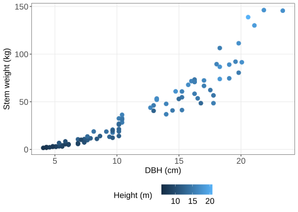
This looks pretty good. It might look better to move the colorbar title from the left to the top center of the legend. Changing the location of the colorbar title and centering adjustments are done using the color scale guide as illustrated below (same code as above but with scale_color_continuous() added).
ggplot(data = fef,
mapping = aes(x = DBH_cm, y = Stem_kg, color = Height_m)) +
geom_point(size = 3) +
labs(color = "Height (m)", x = "DBH (cm)", y = "Stem weight (kg)") +
theme_bw() +
theme(text = element_text(size = 14),
axis.text = element_text(size = 14),
legend.text = element_text(size = 14),
panel.grid.minor = element_blank(),
legend.direction = "horizontal",
legend.position = "bottom"
) +
scale_color_continuous(guide = guide_colorbar(title.position = "top",
title.hjust = 0.5))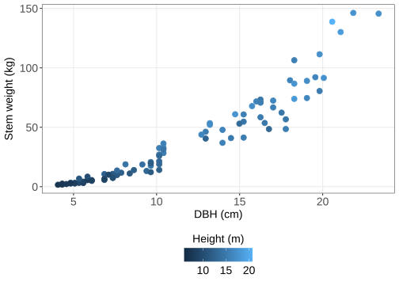
As you learn ggplot2, figuring out which graphic components to modify to achieve your desired change can be challenging (and perhaps a bit frustrating). However, Google, user forums, manual pages, and the ever expanding set of ggplot2 references and vignettes will be key to developing proficiency and a codebase upon which you can build graphics for future projects.
9.2.4 Facets
Figure 1.1, in Section 1.2.1, shows the relationship between DBH and component weight for four different tree components and four different species. Each of the 16 panels that comprise this graphic show a unique component and species combination. A facet is one side of something with many sides, hence the naming for facet_*() functions that create these multi-panel graphics. The facet_grid() function forms a matrix of panels defined by row and column faceting variables. It’s most useful when you have two discrete variables, and all combinations of the variables exist in the data. The facet_wrap() function is useful if you have one variable with multiple levels.
Creating a facet graphic is as easy as adding facet_grid() or facet_wrap() to your ggplot() expression and identifying the faceting variable or variables using the vars() function, as illustrated below.
ggplot(data = fef, mapping = aes(x = DBH_cm, y = Stem_kg)) +
geom_point() +
geom_smooth() +
facet_wrap(vars(Species))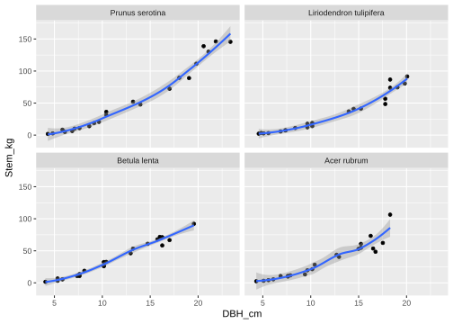
As you can see above, the facet default is to share axes scales across all panels. You can allow each panel to have its own scales computed from its data subset by adding scales = "free" (or values "free_x" or "free_y" for axis specific control), as illustrated below.
ggplot(data = fef, mapping = aes(x = DBH_cm, y = Stem_kg)) +
geom_point() +
geom_smooth() +
facet_wrap(vars(Species), scales = "free")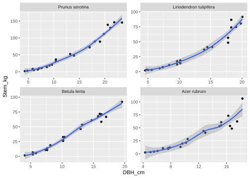
The fef data subset we’re working with includes weight measurements for stem (Stem_kg) and other woody material (Otherwood_kg) components (see below).
#> # A tibble: 88 × 5
#> Species DBH_cm Height_m Stem_kg Otherwoody_kg
#> <fct> <dbl> <dbl> <dbl> <dbl>
#> 1 Acer rubrum 15.2 14.6 54.7 50.4
#> 2 Acer rubrum 17.5 14.6 62.3 60.8
#> 3 Acer rubrum 16.3 14.6 73.3 41.2
#> 4 Acer rubrum 16.5 14.9 53.6 52.3
#> 5 Acer rubrum 18.3 15.5 106. 52.5
#> 6 Acer rubrum 7.87 12.2 11.7 2.5
#> 7 Acer rubrum 5.08 9.30 3.2 2
#> 8 Acer rubrum 10.4 15.2 28.3 10.1
#> 9 Acer rubrum 6.10 8.53 5.5 2.5
#> 10 Acer rubrum 6.86 12.3 10.6 4.5
#> # ℹ 78 more rowsSay we want to add facets for these two tree component weights. To do so we need to make the messy fef data tidy (it’s messy because the component weights are not held in a single column, i.e., they are in wide format). Referring to Section 8.1 we’ll tidy up fef by moving component weights from wide to long format as follows.
fef_long <- fef %>%
pivot_longer(cols = c("Stem_kg", "Otherwoody_kg"),
names_to = "Component",
values_to = "Weight_kg")
fef_long # Take a look.#> # A tibble: 176 × 5
#> Species DBH_cm Height_m Component Weight_kg
#> <fct> <dbl> <dbl> <chr> <dbl>
#> 1 Acer rubrum 15.2 14.6 Stem_kg 54.7
#> 2 Acer rubrum 15.2 14.6 Otherwoody_kg 50.4
#> 3 Acer rubrum 17.5 14.6 Stem_kg 62.3
#> 4 Acer rubrum 17.5 14.6 Otherwoody_kg 60.8
#> 5 Acer rubrum 16.3 14.6 Stem_kg 73.3
#> 6 Acer rubrum 16.3 14.6 Otherwoody_kg 41.2
#> 7 Acer rubrum 16.5 14.9 Stem_kg 53.6
#> 8 Acer rubrum 16.5 14.9 Otherwoody_kg 52.3
#> 9 Acer rubrum 18.3 15.5 Stem_kg 106.
#> 10 Acer rubrum 18.3 15.5 Otherwoody_kg 52.5
#> # ℹ 166 more rowsNow we’re ready to add facets for component! Notice in the code below, the y in aes() is now set to Weight_kg and we specify Component as the additional faceting variable in a call to facet_grid().
ggplot(data = fef_long, mapping = aes(x = DBH_cm, y = Weight_kg)) +
geom_point() +
geom_smooth() +
facet_grid(vars(Species), vars(Component))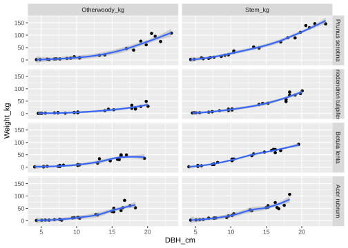
Looks pretty good, but some final tweaks are needed. Notice the row label for Liriodendron tulipifera is cut off, that needs fixing. Also let’s add better labels to the axes and columns, and reverse the column order (it feels right to have stem come before otherwoody).
Changing the graphic’s column order and labels is most easily accomplished by converting the Component faceting variable to a factor, which is done below using a call to factor() within mutate(). The order in which columns appear in the graphic is determined by the order of the factor levels, and the column labels will be the factor values or, if specified, the factor labels. In the code below, both the levels and labels arguments are specified in the factor() function. Defining the factor with labels effectively replaces Stem_kg with Stem and Otherwoody_kg with Otherwoody in the newly formed factor.
fef_long <- fef_long %>%
mutate(Component = factor(Component,
levels = c("Stem_kg", "Otherwoody_kg"),
labels = c("Stem", "Otherwoody")))
fef_long %>%
glimpse() # Check out the Component factor.#> Rows: 176
#> Columns: 5
#> $ Species <fct> Acer rubrum, Acer rubrum, Acer rubr…
#> $ DBH_cm <dbl> 15.240, 15.240, 17.526, 17.526, 16.…
#> $ Height_m <dbl> 14.6304, 14.6304, 14.6304, 14.6304,…
#> $ Component <fct> Stem, Otherwoody, Stem, Otherwoody,…
#> $ Weight_kg <dbl> 54.7, 50.4, 62.3, 60.8, 73.3, 41.2,…Getting the row names to wrap, and not be cut off, is best accomplished using the facet_grid() labeller argument as illustrated below. Here, the labeller argument takes an object created using the labeller() function which specifies how the species names should be wrapped onto multiple lines after a given width is exceeded. Column labels can also be specified using the labeller argument, but it’s easier to specify the labels when forming the Component factor.
ggplot(data = fef_long, mapping = aes(x = DBH_cm, y = Weight_kg)) +
geom_point() +
geom_smooth() +
facet_grid(vars(Species), vars(Component),
labeller = labeller(Species =
label_wrap_gen(width = 10,
multi_line = TRUE)))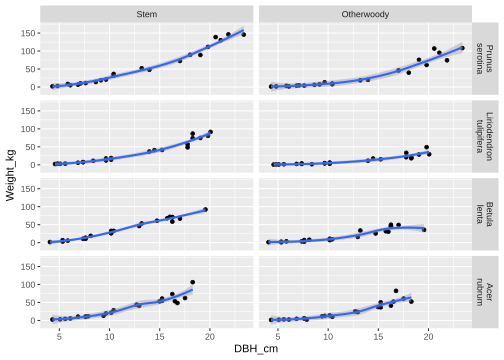
As with other topics covered in this chapter, we provide an incomplete tour of facets. These are extremely useful tools for exploring your data and communicating information. We’ll explore additional facet functionality in subsequent sections.
9.2.5 Building graphics incrementally
As you’ve seen, constructing a graphic is an incremental process that often involves trial and error. It can be useful to build a base graphic, to which you add layers and modifying functions. The base graphic and subsequent incremental additions can be saved as a ggplot object. Below we define a base graphic and assign it to p, then update p incrementally once we’re happy with the additions. Notice the graphic is not plotted until you run p on its own (which is equivalent to running print(p)).
p <- ggplot(data = fef, mapping = aes(x = DBH_cm, y = Stem_kg)) +
geom_point(size = 5, shape = 21, mapping = aes(fill = Height_m))
p # Implicit for print(p).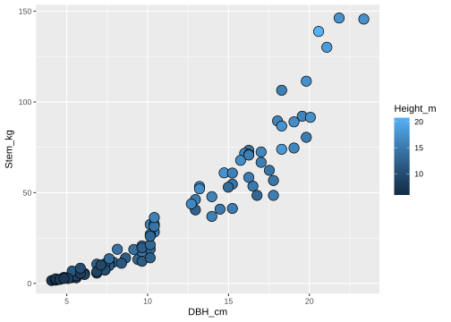
Now you can redefine or modify the point geometry layer, and add more layers and modifying functions to p. Below, we try out a color gradient to see if we like it.
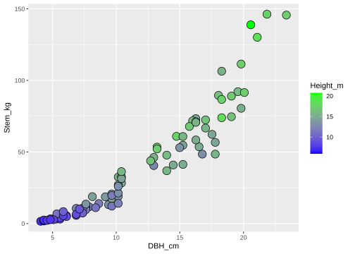
Try some different colors.
# Better colors, save it and move on.
p <- p +
scale_fill_gradient(low = "white", high = "seagreen") Now adjust scales and themes to your liking.
p <- p +
labs(fill = "Height (m)", x = "DBH (cm)", y = "Stem (kg)") +
theme_bw() +
theme(text = element_text(size = 14))
p # Looks good!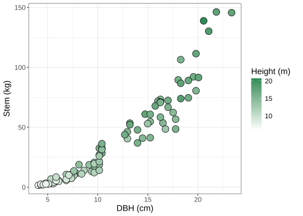
9.2.6 Arranging graphics
We often want to show two or more graphics side by side to compare and communicate information. Using facets is one approach, but limited to comparing the same data representation across one or two faceting variables. There are several packages that provide functions for arranging multiple ggplot() graphics, including cowplot (Wilke 2024) and patchwork (Pedersen 2024). Here, we briefly demonstrate the patchwork package, because it’s versatile, simple, and adopts ggplot2’s + operator to add plots together. In the words of the package author Thomas Lin Pedersen, “the goal of patchwork is to make it ridiculously simple to combine separate ggplots into the same graphic.”
Below we make several ggplot objects then modify and arrange them in different ways to demonstrate patchwork’s most basic capabilities. Install the patchwork package via install.packages("patchwork").
p_1 <- ggplot(data = fef,
mapping = aes(x = DBH_cm)) +
geom_histogram() +
ggtitle("Plot 1")
p_2 <- ggplot(data = fef,
mapping = aes(x = DBH_cm, y = Stem_kg)) +
geom_point() +
ggtitle("Plot 2")
p_3 <- ggplot(data = fef_long,
mapping = aes(x = DBH_cm, y = Weight_kg)) +
geom_point() +
facet_wrap(vars(Component)) +
ggtitle("Plot 3")
p_4 <- ggplot(data = fef,
mapping = aes(x = DBH_cm, y = Stem_kg, color = Species)) +
geom_point() +
geom_smooth() +
ggtitle("Plot 4")Add two graphics together using the + operator.
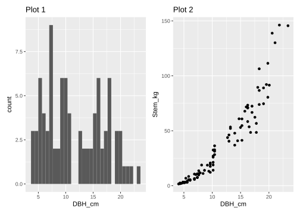
When adding graphics together, the last added ggplot is active and will receive any added layers or modifying functions.
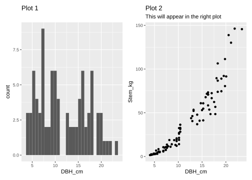
Parentheses can be used to control order of operations. For example, to add layers or modifying functions to a ggplot that is not the last ggplot.
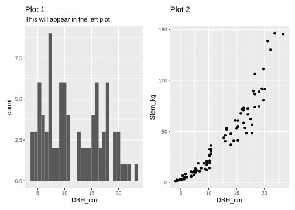
By default, patchwork tries to keep the layout square and fill it out by row order.
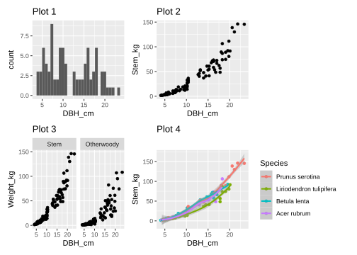
Control the layout with the addition of the plot_layout() function.
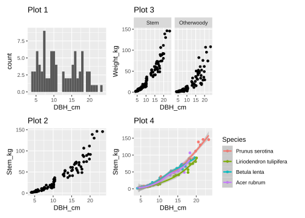
In addition to controlling placement via plot_layout(), you can use the | operator to place plots beside each other and the / operator to stack them.
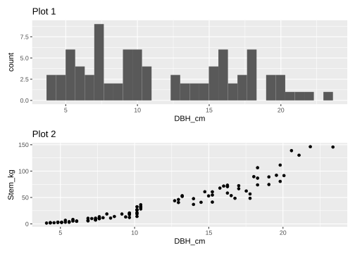
Using parentheses with the placement operators allows you to create nested layouts.
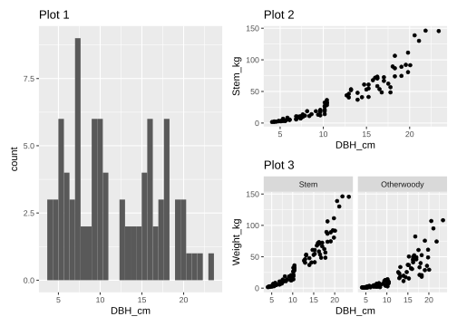
This is a very brief overview of some of patchwork’s capabilities. See its manual pages, vignette via vignette("patchwork"), and on-line reference at https://patchwork.data-imaginist.com for much more, including how to add annotation, collect legends into one place, remove duplicate legends, create overlays and insets, and further control layout and alignment.
9.2.7 Saving graphics
We often want to export our graphics for use in an external document or share with colleagues. There are several ways to save graphics in a variety of file formats. One approach is to use ggsave(), see ?ggplot2::ggsave(). The plot argument default in ggsave() is to save the most recent graphic; however, you can also give plot a ggplot object, like the ones created in the previous section. The device argument allows you to choose among a variety of vector (e.g., “eps”, “ps”, “pdv”, “svg”) or raster (e.g., “jpeg”, “tiff”, “png”, “bmp”, “wmf”) formats.87
9.3 Exploring different graphics
We explore ggplot2 further using the FACE dataset introduced in Section 1.2.3. Recall, the Aspen FACE was designed to assess the effect of increasing tropospheric ozone (O\(_3\)) and carbon dioxide (CO\(_2\)) concentration on structure and functioning of northern forest ecosystems.
As noted previously, ggplot2 functions are designed to work with tidy data; therefore, we’ll use the tidy FACE tibble face_long created at the end of Section 8.2. You can either recreate this tibble following the code in Section 8.1 or read it into face_long from the “datasets/FACE_long.csv” file using the code below.
#> # A tibble: 9,955 × 6
#> Rep Treat Clone ID Year Height_cm
#> <dbl> <dbl> <dbl> <dbl> <dbl> <dbl>
#> 1 1 1 8 45 2001 NA
#> 2 1 1 8 45 2002 NA
#> 3 1 1 8 45 2003 NA
#> 4 1 1 8 45 2004 NA
#> 5 1 1 8 45 2005 NA
#> 6 1 1 216 44 2001 547
#> 7 1 1 216 44 2002 622
#> 8 1 1 216 44 2003 715
#> 9 1 1 216 44 2004 716
#> 10 1 1 216 44 2005 817
#> # ℹ 9,945 more rowsHere, the Rep, Treat, and Clone columns are part of the experimental design, ID is a unique tree identification number, Year is the year in which the tree’s height was measured, and the recorded height is held in Height_cm. As mentioned previously, the FACE data are longitudinal, meaning observational units, trees in this case, are measured over time. Most longitudinal data are collected to understand how observational units respond to different treatments. The FACE was designed to look at how tree growth responds to elevated tropospheric O\(_3\) and CO\(_2\). We’ll explore this question using a series of graphics.
We begin by adding a bit more information to face_long. As the name suggests, the Treat variable records each tree’s treatment. Trees were assigned to one of four treatments for the study’s duration. The treatments are coded 1 (control), 2 (elevated CO\(_2\)), 3 (elevated O\(_3\)), 4 (elevated CO\(_2\) and O\(_3\)). Let’s add this more descriptive information to Treat by converting the column to a factor and associating treatment numeric code levels with treatment labels. We also convert Year to a factor.
face_long <- face_long %>%
mutate(Treat = factor(Treat, levels = 1:4,
labels = c("Control", "Elevated CO2",
"Elevated O3",
"Elevated CO2 and O3")),
Year = factor(Year))
face_long # Take a look at the new factors.#> # A tibble: 9,955 × 6
#> Rep Treat Clone ID Year Height_cm
#> <dbl> <fct> <dbl> <dbl> <fct> <dbl>
#> 1 1 Control 8 45 2001 NA
#> 2 1 Control 8 45 2002 NA
#> 3 1 Control 8 45 2003 NA
#> 4 1 Control 8 45 2004 NA
#> 5 1 Control 8 45 2005 NA
#> 6 1 Control 216 44 2001 547
#> 7 1 Control 216 44 2002 622
#> 8 1 Control 216 44 2003 715
#> 9 1 Control 216 44 2004 716
#> 10 1 Control 216 44 2005 817
#> # ℹ 9,945 more rowsLet’s get a little better sense of these data. We can see from the output above that face_long has 9955 rows and there are some NA Height_cm values. Let’s figure out the number of trees, number of missing height measurements, and number of trees in each each treatment (recall, trees are assigned to only one treatment).
face_long %>%
summarize(n_tree = n_distinct(ID), # Trees in the study.
n_na_heights = sum(is.na(Height_cm))) # Number of NA.#> # A tibble: 1 × 2
#> n_tree n_na_heights
#> <int> <int>
#> 1 1991 1344#> # A tibble: 4 × 2
#> Treat n_trees
#> <fct> <int>
#> 1 Control 498
#> 2 Elevated CO2 497
#> 3 Elevated O3 497
#> 4 Elevated CO2 and O3 499Some working hypotheses that motivated the FACE study were that elevated atmospheric CO\(_2\) could increase tree growth rate, while increased O\(_3\) could damage leaf tissue and decrease growth rate. Let’s see if the data shows a treatment effect on height growth over time.
Begin by plotting each tree’s growth over years as a line and color the line by treatment. Given what we learned about aesthetics and geometries in the previous section the code below might be a logical starting point.
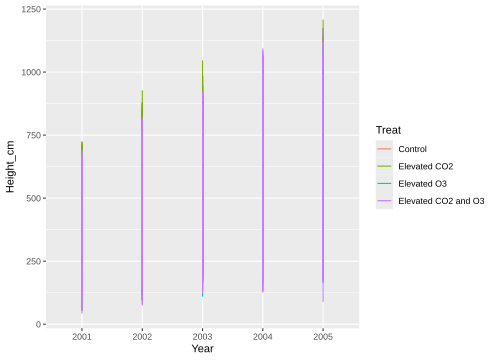
While the graphic is not what we’re aiming for, it’s close. It’s actually drawing a line connecting all height measurements within year and treatment. As it stands, there is nothing telling geom_line() that sets of height measurements are associated with individual trees over years. This information is provided using the group aesthetic, see ?ggplot2::aes_group_order, via group = ID in aes() below.
ggplot(data = face_long,
mapping = aes(x = Year, y = Height_cm, color = Treat,
group = ID)) +
geom_line()#> Warning: Removed 1336 rows containing missing values
#> or values outside the scale range (`geom_line()`).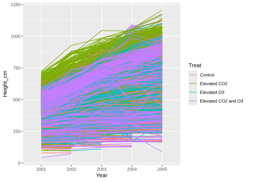
Okay, this is looking better.88 Each line traces a tree’s growth over time and color shows the tree’s treatment. Perhaps if there were fewer trees we’d be able to notice some treatment effect. So perhaps the better approach is to summarize tree growth trends within each treatment. The stat_summary() function is made for just such a task—it summarizes y at discrete values of x using the function specified by the fun argument and displays the result using the geometry specified by the geom argument.
The call to stat_summary() below inherits the aesthetics defined in aes(), computes the mean height measurement for year and treatment combinations, and displays the result as a line geometry.
ggplot(data = face_long,
mapping = aes(x = Year, y = Height_cm, color = Treat,
group = Treat)) +
stat_summary(geom = "line", fun = mean)#> Warning: Removed 1344 rows containing non-finite
#> outside the scale range (`stat_summary()`).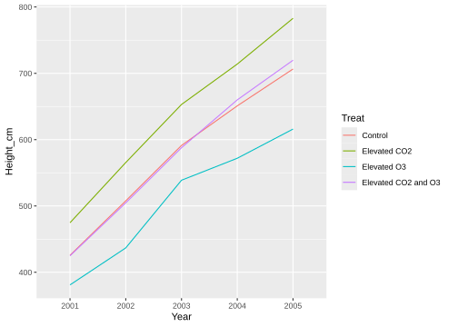
Each line in the graphic traces mean growth within each treatment over years.89
It’s instructive to take this one step farther. Let’s draw the individual trees below the mean growth lines. We’ll make the individual tree lines semi-transparent so they don’t dominate the scene. To do so, we keep x, y, and color aesthetics in ggplot(), map the geom_line() to group = ID, and map stat_summary() to group = Treat. Setting transparency is done via the alpha aesthetic.
ggplot(data = face_long,
mapping = aes(x = Year, y = Height_cm, color = Treat)) +
geom_line(mapping = aes(group = ID), alpha = 0.05) +
stat_summary(geom = "line", fun = mean, mapping = aes(group = Treat),
linewidth = 1)#> Warning: Removed 1344 rows containing non-finite
#> outside the scale range (`stat_summary()`).#> Warning: Removed 1336 rows containing missing values
#> or values outside the scale range (`geom_line()`).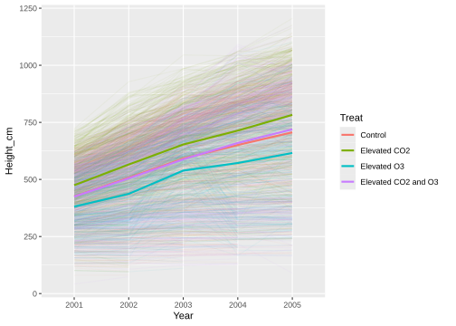
The mean lines suggest there are some differences among the treatments. Specifically, elevated CO\(_2\) seems to increase overall height compared with the other three treatments. Elevated O\(_3\) seems to decrease overall height and growth rate appears to decrease beyond 2003, relative to the other treatments. The control and elevated CO\(_2\) and O\(_3\) height and growth trends are about the same. However, as the individual tree growth lines suggest, there is large variability in individual tree response to the various treatments. This variability needs to be taken into account to draw statistically valid conclusions about treatment effect. Formal analysis of the FACE data and results from similar studies have shown O\(_3\)’s negative growth effects on tree seedlings. However, long-term positive growth effects of elevated CO\(_2\) have not been clearly demonstrated, especially while in the presence of elevated O\(_3\) and other environmental factors that negatively impact growth, see, e.g., McLaughlin et al. (2007), Karnosky et al. (2007), Davis, Sohngen, and Lewis (2022).
9.4 Visualizing distributions
There are a number of geometries used to display data distributions. The appropriate ggplot2 geometry for the job will depend on whether the distribution is defined by one or more variables, data types of the variables, and how variables are to be summarized.
In this section we focus on a limited set of geometries most often used to summarize forestry data distributions. In particular, we use geometries that create bar charts to visualize forest inventory data by summarizing a continuous variable (e.g., volume, basal area) or discrete variable (e.g., occurrence) by one or more categorical variables, e.g., DBH class, species. We begin by illustrating the geometries using a very simple toy dataset, then provide an example using the Elk County timber cruise dataset introduced in Section 1.2.2.
Below is a toy dataset comprising six trees and their associated species code (Spp), DBH (DBH_cm), and biomass (Bio_kg).90 We also add a 2 cm DBH class variable with intervals \([18, 20)\), \([20, 22)\), \([22, 24)\), and \([24, 26]\) using mutate() and the handy cut_width() function, introduced in Section 8.3, and place it to the right of the DBH_cm column.
tbl <- tibble(Spp = c("ACRU", "ACRU", "FAGR", "FAGR", "BEPA", "BEPA"),
DBH_cm = c(24, 22, 19, 24, 20, 18),
Bio_kg = c(272, 221, 173, 306, 176, 138))
# Add DBH class.
tbl <- tbl %>%
mutate(tbl,
DBH_2cm_class = cut_width(DBH_cm, width = 2,
center = 19, closed = "left"),
.after = DBH_cm)
# Take a look.
tbl#> # A tibble: 6 × 4
#> Spp DBH_cm DBH_2cm_class Bio_kg
#> <chr> <dbl> <fct> <dbl>
#> 1 ACRU 24 [22,24] 272
#> 2 ACRU 22 [22,24] 221
#> 3 FAGR 19 [18,20) 173
#> 4 FAGR 24 [22,24] 306
#> 5 BEPA 20 [20,22) 176
#> 6 BEPA 18 [18,20) 138There are two types of bar chart geometries that differ by how bar height is computed.
geom_bar()makes bar height proportional to the number of discrete value occurrences, i.e., counts, in the given variable (or if theweightaesthetic is supplied, the sum of the weight values). These counts (or sums) can be partitioned by other discrete variables. Thegeom_bar()function uses thestat_count()stat function which counts discrete value occurrences.geom_col()makes bar height proportional to the value in the given variable. These sums can be partitioned by one or more discrete variables. Thegeom_col()function uses thestat_identity()stat function which leaves values unchanged.
The code below uses geom_bar() to show tree count by DBH_class and tree count by species and DBH_class. We place the resulting bar charts side by side to facilitate comparison.
ggplot(tbl, aes(x = DBH_2cm_class)) +
geom_bar()
ggplot(tbl, aes(x = DBH_2cm_class, fill = Spp)) +
geom_bar()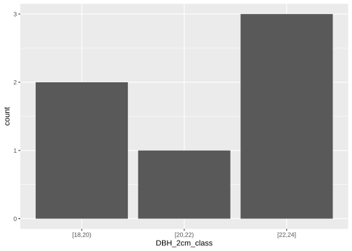
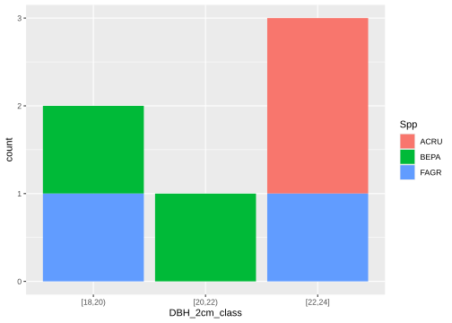
Notice in the right bar chart above, the default behavior is to stack species counts, i.e., for the \([18,20)\) cm DBH class there is one FAGR and one BEPA, and in the \([22,24]\) cm DBH class there are two ACRU and one FAGR. This default behavior is controlled using position adjustment of elements within a layer. Three adjustments apply primarily to bars:
position_stack()stack overlapping bars on top of each other (default),position_fill()stack overlapping bars, scaling so the top is always at 1,position_dodge()place overlapping bars side by side.
Each position adjustment is illustrated below below.
bars <- ggplot(tbl, aes(x = DBH_2cm_class, fill = Spp)) +
xlab(NULL) +
ylab(NULL) +
theme(legend.position = "none")
bars + geom_bar() # Default, same as geom_bar(position = "stack")
bars + geom_bar(position = "fill")
bars + geom_bar(position = "dodge")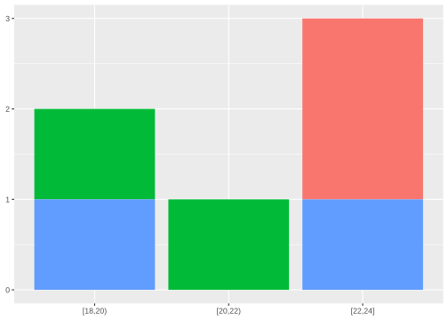
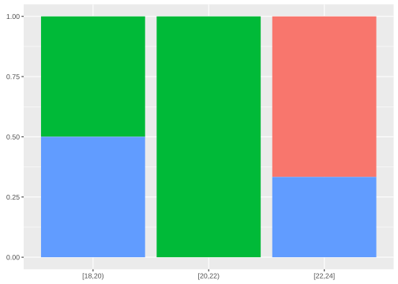
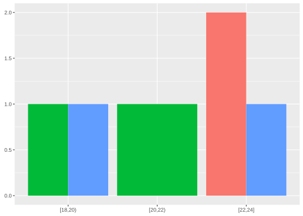
All three position adjustments above have use in inventory summaries. Select the one that best conveys the information you wish to communicate. For example, the middle bar chart (i.e., position = "fill") shows species relative abundance by DBH class. Relative abundance is a component of diversity and is a measure of how common or rare a species is relative to other species. This chart shows FAGR and BEPA are equally abundant in the \([18,20)\) cm class, BEPA dominates the \([20,22)\) cm class, and ACRU is more abundant than FAGR in the \([22,24]\) cm classes.
Next, let’s use geom_col() to make two bar charts that show total biomass by DBH_class and biomass by species and DBH_class. Notice, geom_col() requires a y aesthetic which is summed by x aesthetic class and any other discrete aesthetic provided to color or fill. We again take the default position = "stack" for each bar chart and place the charts side by side to facilitate comparison.
ggplot(tbl, aes(x = DBH_2cm_class, y = Bio_kg)) +
geom_col()
ggplot(tbl, aes(x = DBH_2cm_class, y = Bio_kg, fill = Spp)) +
geom_col()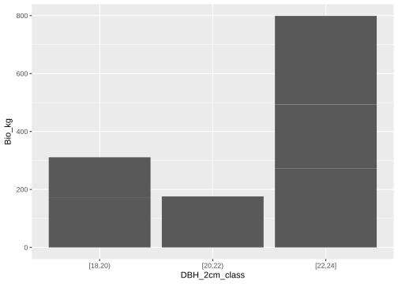
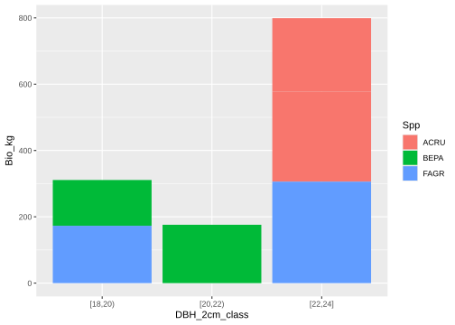
The figures above look similar to those from geom_bar(), but now the bar height is the sum of Bio_kg.91
Setting the positional adjustment to fill for the bar chart shows a measure of species relative dominance by DBH class. Like relative abundance, relative dominance is a component of diversity and is a measure of how dominant a species is relative to other species, based on some continuous variable like biomass, volume, or basal area. The bar chart below shows relative dominance measured using biomass by species.
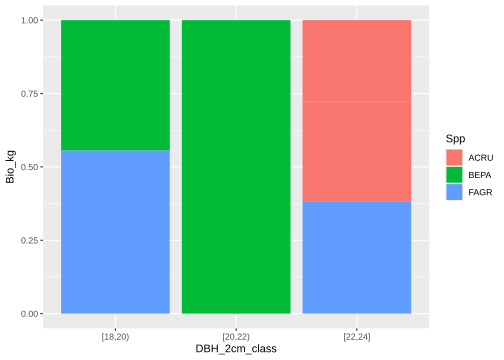
Above we see that for the \([18,20)\) cm class FAGR is slightly dominant over BEPA (i.e., has slightly more biomass per acre), BEPA is the only and hence dominant species in the \([20,22)\) cm class, and ACRU dominates FAGR in the \([20,23]\) cm class.
Now, let’s look at relative abundance and relative dominance without breaking down by DBH class.
The left bar chart shows that species are equally abundant, because there are two of each. The right plot shows ACRU has slightly more biomass than FAGR and is hence the dominate species, based on this measure of dominance.
9.4.1 Elk County timber cruise bar charts
Let’s return to the Elk County timber cruise dataset introduced in Section 1.2.2 and developed in more detail at the beginning of the Section 8.5. Much of what is covered here builds on stand and stock tables covered in Section 8.3, in fact several graphics we create are simply visual representations of tabular summaries created previously.
Our initial focus is on 1-dimensional distributions of continuous variables summarized by one or more categorical variable. Begin by reading the per acre estimates for acceptable growing stock into elk_ags and adding the DBH class factor (DBH_2in_range) which more explicitly defines the two inch DBH class used when the data were recorded in the field.92 Refer to the beginning of Section 8.5 for a description of these data and column definitions. Here, per acre number of trees (Trees_ac), basal area (BA_ac), and number of 16 foot logs (Logs_ac) are estimated for each observed species and two inch DBH class combination.93
elk_ags <- read_csv("datasets/elk_spp_dbh_estimates.csv")
elk_ags <- elk_ags %>%
mutate(DBH_2in_range = cut_width(DBH_2in, width = 2,
boundary = 1, closed = "left"),
.after = DBH_2in)
elk_ags#> # A tibble: 43 × 6
#> Species DBH_2in DBH_2in_range Trees_ac BA_ac Logs_ac
#> <chr> <dbl> <fct> <dbl> <dbl> <dbl>
#> 1 Beech 12 [11,13) 1.33 1.04 1.33
#> 2 Beech 14 [13,15) 0.585 0.625 0.682
#> 3 Beech 16 [15,17) 0.448 0.625 0.746
#> 4 Beech 20 [19,21) 0.0955 0.208 0.143
#> 5 Black … 12 [11,13) 1.06 0.833 1.06
#> 6 Black … 14 [13,15) 0.974 1.04 1.07
#> 7 Black … 16 [15,17) 0.895 1.25 1.42
#> 8 Black … 18 [17,19) 0.118 0.208 0.236
#> 9 Black … 20 [19,21) 0.0955 0.208 0.191
#> 10 Black … 12 [11,13) 0.796 0.625 0.796
#> # ℹ 33 more rowsBelow we make two sets of bar charts, one set for number of trees per acre and the other for basal area per acre. In each set we show the variable’s distribution across DBH classes, with and without species information. To get a per acre estimate for each variable you must sum the estimates within the desired class, which is accomplished using the geom_col() function. We make adjustments to labels, fill color, and theme elements. We also place the legend inside the plot area to save space. Per the footnote a few pages back, we match the color to the fill aesthetic to get rid of the pesky horizontal line artifacts that appear in the bars.
ggplot(elk_ags, aes(x = DBH_2in_range, y = Trees_ac)) +
geom_col(color = "grey35") +
xlab("DBH class (in)") +
ylab("Trees per acre") +
theme_bw() +
theme(text = element_text(size = 14), # Increase font size.
axis.title.x = element_text(vjust = -1)) # Move label down.
ggplot(elk_ags, aes(x = DBH_2in_range, y = Trees_ac,
fill = Species, color = Species)) +
geom_col() +
xlab("DBH class (in)") +
ylab("Trees per acre") +
scale_fill_brewer(name = NULL, type = "qual", palette = "Paired") +
scale_color_brewer(name = NULL, type = "qual", palette = "Paired") +
theme_bw() +
theme(text = element_text(size = 14), # Increase font size.
axis.title.x = element_text(vjust = -1), # Move label down.
legend.position = c(0.85,0.65)) # Move legend into plot area.#> Warning: A numeric `legend.position` argument in `theme()` was deprecated in ggplot2 3.5.0.
#> ℹ Please use the `legend.position.inside` argument of `theme()` instead.
#> This warning is displayed once every 8 hours.
#> Call `lifecycle::last_lifecycle_warnings()` to see where this warning was generated.The right bar chart above is a visual representation of the stand table created in Exercise 8.6. Comparing this table with the bar charts above, you can see column totals equal total bar heights for each DBH class. Also, for a given DBH class, species values in the table equal the corresponding bar segment height. Both stem density (i.e., trees per acre) representations show red maple is the dominate species across DBH classes, and particularly so in the \([13, 15)\) in class. Rare species are northern red oak and yellow poplar.
ggplot(elk_ags, aes(x = DBH_2in_range, y = Logs_ac)) +
geom_col(color = "grey35") +
xlab("DBH class (in)") +
ylab("Logs per ac") +
theme_bw() +
theme(text = element_text(size = 14), # Increase font size.
axis.title.x = element_text(vjust = -1)) # Move label down.
ggplot(elk_ags, aes(x = DBH_2in_range, y = Logs_ac,
fill = Species, color = Species)) +
geom_col() +
xlab("DBH class (in)") +
ylab("Logs per ac") +
scale_fill_brewer(name = NULL, type = "qual", palette = "Paired") +
scale_color_brewer(name = NULL, type = "qual", palette = "Paired") +
theme_bw() +
theme(text = element_text(size = 14), # Increase font size.
axis.title.x = element_text(vjust = -1), # Move label down.
legend.position = c(0.85,0.65)) # Move legend into plot area.The right bar chart above is a visual representation of the stock table created in Exercise 8.8. Again, comparing this table with the bar charts above, you can see column totals equal total bar heights for each DBH class, and bar segment heights in the right chart correspond to values in the stock table. Given the abundance of red maple in the stand, it’s not surprising the right chart above shows the species also carries the most log volume across DBH classes. Of course, similar charts can be created for other continuous variables, such as biomass, basal area, and monetary value if log prices by species are available.
In this section, we took a brief look at the bar_geom() and col_geom() functions used to create bar charts when the x aesthetic is discrete and known (e.g., DBH class or species). Said differently, here we know the bins (DBH class) to partition the variable(s) of interest (e.g., number of trees or biomass). Often times, however, our interest is in getting a sense of how a variable’s values are distributed across its value range and binning serves only to allow for smoothing across the graphic’s columns. That is we want to understand value frequency across the variable’s value range. Such understanding is most often sought for continuous variables, where there is not natural bins. In such cases geom_histogram(), see ?ggplot2::geom_histogram(), might be more appropriate, as illustrated below.
For example, let’s look at the distribution of basal area across the Elk County property. This time, however, let’s use the tree measurement data available in “datasets/PA/Elk_trees.csv”, which is read into elk below. We also do a bit of data prep work, including computing basal area from DBH (in) and added to fef as BA (ft\(^2\)), selecting a few columns we want to work with, removing any rows with an NA, and duplicating measurements given the forester’s tree count (i.e., to save time, trees of the same species, DBH, and number of logs are counted and recorded in the Tree_count column).
elk <- read_csv("datasets/PA/Elk_trees.csv")
# Compute BA and select a few variables we'll work with.
elk <- elk %>%
mutate(BA = 0.005454 * DBH^2) %>%
select(Species_name, Product_name, BA, Tree_count)
# Remove any row with an NA.
elk <- elk %>%
drop_na()
# Use uncount() to duplicate rows according to tree count.
elk <- elk %>%
uncount(Tree_count)Okay, let’s get a sense of the basal area distribution across the property. We also add an x-axis label with a math superscript for feet squared using the expression() function.
ggplot(elk, aes(x = BA)) +
geom_histogram(fill = "steelblue", color = "black") + # A little color.
xlab(expression(paste("Basal area ", (ft^{2})))) + # Nice math label.
ylab("Number of trees")#> `stat_bin()` using `bins = 30`. Pick better value with
#> `binwidth`.First, notice the message produce by the code above regarding bins. Binwidth is the x-axis interval width over which the variable’s values are counted. geom_histogram() tries to guess a reasonable binwidth, which in this case resulted in 30 bins across the x-axis, but as the message suggests, you can set your own width. The histogram above shows most trees have a basal area less than 1.5 (ft\(^2\)) and at least one with basal area greater than 6 (ft\(^2\)).
Now let’s break the basal area distribution down by species.
ggplot(elk, aes(x = BA)) +
geom_histogram(fill = "steelblue", color = "black") +
xlab(expression(paste("Basal area ", (ft^{2})))) +
ylab("Number of trees") +
facet_wrap(vars(Species_name))#> `stat_bin()` using `bins = 30`. Pick better value with
#> `binwidth`.How about breaking it down by species and acceptable growing stock (i.e., Product_name includes “AGS”). Below we use the grepl() function to test for the “AGS” string in Product_name values, then pipe our filtered data right into ggplot(). The labeller argument in facet_grid() is used to wrap the species labels so they fit nicely in each column.
elk %>%
filter(grepl("AGS", Product_name)) %>%
ggplot(aes(x = BA)) +
geom_histogram(fill = "steelblue", color = "steelblue") +
xlab(expression(paste("Basal area ", (ft^{2})))) +
ylab("Number of trees") +
theme(strip.text = element_text(size = 6)) + # Reduce facet label size.
facet_grid(vars(Product_name), vars(Species_name),
labeller = labeller(Species_name =
label_wrap_gen(width = 8,
multi_line = TRUE)))#> `stat_bin()` using `bins = 30`. Pick better value with
#> `binwidth`.We’ve looked at three geometries for visualizing 1-dimensional distributions, i.e., geom_col(), geom_bar(), geom_histogram(). While we’ve only scratched the surface of how these functions can be used and modified, the applications covered here will get you going in the right direction for summarizing most forest inventory data you’ll encounter. Additional learning resources are provided in the next section and we’ll continue to use these and related ggplot2 functions throughout the book.
9.5 Summary
This chapter offered a brief introduction to the ggplot2 package. We defined Hadley Wickham’s grammar of graphics and how grammar components are strung together to create graphics. In Section 9.2 we applied some grammar components to create and modify scatter plots and illustrated geometry, mapping, stats, scale, guide, and theme features. Here too, we presented ggplot2 as a dual use tool for efficient EDA and creating beautiful informative graphics.
Section 9.4 focused on bar charts most often used to summarize and convey information from forest inventories. In particular, we looked at how stand and stock tables are visualized. We also defined relative abundance and relative dominance and how these measures of stand diversity are easily computed and visualized.
Our aim for this chapter was to point you in the right direction as you set out to make ggplot2 graphics. Like other topics covered in this book, becoming comfortable and proficient with this package takes time and patience. There are many resources to help you along. Often the key to efficiently finding solutions to your problem is a well written Google search that will lead you to user forums, manual pages, and ggplot2 references and vignettes. Growing your own codebase of scripts used to make graphics becomes an important resource over time. We’re constantly going back into old scripts to grab a few lines of code to create or modify a geometry, scale, or guide for a current project (including this book)! This is yet another opportunity to do your future-self a good turn by keeping your codebase well organized and documented.
As mentioned previously, the authoritative references for learning to use ggplot2 is the book “ggplot2: Elegant Graphics for Data Analysis” (Wickham, Navarro, and Pedersen 2023) and the extensive online reference. If you learn well from webinars, then we’d suggest ggplot2 co-author Thomas Lin Pedersen’s multi-part YouTube webinar entitled “Plotting Anything with ggplot2.” If you want to start creating common graphics as quickly as possible, we’d recommend “The R Graphics Cookbook” by Winston Chang (Chang 2018).94
9.6 Exercises
Exercises 9.1 through 9.3 build on the Elk County timber cruise bar charts created in Section 9.4.1. Below we recreate the elk_ags tibble, which contains the per acre estimates for acceptable growing stock and DBH two inch class factor.
elk_ags <- read_csv("datasets/elk_spp_dbh_estimates.csv")
elk_ags <- elk_ags %>%
mutate(DBH_2in_range = cut_width(DBH_2in, width = 2,
boundary = 1, closed = "left"),
.after = DBH_2in)
elk_ags#> # A tibble: 43 × 6
#> Species DBH_2in DBH_2in_range Trees_ac BA_ac Logs_ac
#> <chr> <dbl> <fct> <dbl> <dbl> <dbl>
#> 1 Beech 12 [11,13) 1.33 1.04 1.33
#> 2 Beech 14 [13,15) 0.585 0.625 0.682
#> 3 Beech 16 [15,17) 0.448 0.625 0.746
#> 4 Beech 20 [19,21) 0.0955 0.208 0.143
#> 5 Black … 12 [11,13) 1.06 0.833 1.06
#> 6 Black … 14 [13,15) 0.974 1.04 1.07
#> 7 Black … 16 [15,17) 0.895 1.25 1.42
#> 8 Black … 18 [17,19) 0.118 0.208 0.236
#> 9 Black … 20 [19,21) 0.0955 0.208 0.191
#> 10 Black … 12 [11,13) 0.796 0.625 0.796
#> # ℹ 33 more rowsExercise 9.1 Write code using elk_ags to reproduce the following bar chart that visualizes relative stand density in the Elk County timber cruise data set.
Exercise 9.2 Write code using elk_ags to reproduce the following bar chart that is a visual representation of the relative dominance stock table by species in the Elk County timber cruise data set.
Exercise 9.3 Use the stand and stock charts created in Section 9.4.1 and Exercises 9.1-9.2 to answer the following questions (no code is required, write answers as comments).
- Which species and DBH class has the most stems per acre?
- In 25 years, which species do you think will have the largest relative density in the [25,27) inch DBH class?
- Which species and DBH class has the most logs per acre?
- Which species has the most logs per acre across DBH classes?
- In 25 years, which species do you think will dominate (in logs per acre) across most DBH classes?
In Exercises 9.4-9.11, we will use the aspen FACE data set to visualize the effects of increasing tropospheric ozone (O\(_3\)) and carbon dioxide (CO\(_2\)) influenced aspen diameter growth from 1997 to 2005. Note that while some exercises do not explicitly use ggplot2, they showcase a typical tidyverse pipeline where we manipulate and wrangle data using dplyr, tidy data using tidyr, then plot data using ggplot2. We load in the complete FACE data set below.
#> [1] "Rep" "Treat"
#> [3] "Clone" "E Clone"
#> [5] "Row" "Col"
#> [7] "ID #" "1997Initial_Height"
#> [9] "1997Initial_Diam" "1997Final_Height"
#> [11] "1997Final_Diam" "1998_Height"
#> [13] "1998_Diam" "1999_Height"
#> [15] "1999_Diam" "2000_Height"
#> [17] "2000_Diam" "2001_Height"
#> [19] "2001_AvgDiam" "2001_Diam@3cm"
#> [21] "2001_Diam@10cm" "2002_Height"
#> [23] "2002_Diam@10cm" "2003_Height"
#> [25] "2003_Diam@10cm" "2003_DBH"
#> [27] "2004_Height" "2004_Diam@10cm"
#> [29] "2004_DBH" "2005_Height"
#> [31] "2005_Diam@10cm" "2005_DBH"
#> [33] "2006_Height" "2006_DBH"
#> [35] "2007_Height" "2007_DBH"
#> [37] "2008_Height" "2008_DBH"
#> [39] "Notes" "Comment1"
#> [41] "Comment2" "Comment3"
#> [43] "Comment4" "Comment5"
#> [45] "Comment6"Exercise 9.4 Using dplyr tools learned in Chapter 7 (and code from earlier in this chapter) convert the Treat variable to a factor with the following labels: “Control” (Treat = 1), ‘Elevated CO2’ (Treat = 2), ‘Elevated O3’ (Treat = 3), ‘Elevated CO2 and O3’ (Treat = 4).
Exercise 9.5 Use dplyr::select() and the contains() helper function to only select columns Rep, Treat, Clone, ID #, and those containing diameter measurements at 10cm from 1997 to 2005. Note the columns 2001_Diam@3cm and 1997Initial_Diam should not be included in the final data set. Your new face tibble should match ours below.
#> Rows: 1,991
#> Columns: 14
#> $ Rep <dbl> 1, 1, 1, 1, 1, 1, 1, 1, 1, 1…
#> $ Treat <fct> Control, Control, Control, C…
#> $ Clone <dbl> 8, 216, 8, 216, 216, 271, 27…
#> $ ID <dbl> 45, 44, 43, 42, 54, 55, 56, …
#> $ `1997Final_Diam` <dbl> 0.40, 0.90, 0.25, 0.78, 0.75…
#> $ `1998_Diam` <dbl> 1.34, 3.11, 0.96, 3.03, 1.92…
#> $ `1999_Diam` <dbl> 2.52, 5.19, 1.71, 5.03, 3.47…
#> $ `2000_Diam` <dbl> NA, 5.960, 2.110, 5.775, 3.9…
#> $ `2001_AvgDiam` <dbl> NA, 6.43, 2.21, 6.14, 4.05, …
#> $ `2001_Diam@10cm` <dbl> NA, 6.29, 2.20, 5.92, 4.00, …
#> $ `2002_Diam@10cm` <dbl> NA, 6.91, 2.51, 6.62, 4.04, …
#> $ `2003_Diam@10cm` <dbl> NA, 7.83, 2.42, 7.58, 4.30, …
#> $ `2004_Diam@10cm` <dbl> NA, 8.6, 2.6, 8.1, 4.4, 6.5,…
#> $ `2005_Diam@10cm` <dbl> NA, 9.1, 2.6, 8.7, 4.3, 6.7,…Exercise 9.6 Use pivot_longer() from tidyr to convert the face data set to long format. Save the new tibble as face_long. Use glimpse() to make sure your tibble matches ours below.
#> Rows: 19,910
#> Columns: 6
#> $ Rep <dbl> 1, 1, 1, 1, 1, 1, 1, 1, 1, 1, 1, 1,…
#> $ Treat <fct> Control, Control, Control, Control,…
#> $ Clone <dbl> 8, 8, 8, 8, 8, 8, 8, 8, 8, 8, 216, …
#> $ ID <dbl> 45, 45, 45, 45, 45, 45, 45, 45, 45,…
#> $ Year_Type <chr> "1997Final_Diam", "1998_Diam", "199…
#> $ Diam_cm <dbl> 0.40, 1.34, 2.52, NA, NA, NA, NA, N…Exercise 9.7 Use separate_wider_delim() to extract only the Year from the Year_Type column. Hint: use delim = '_'. Again, make sure your updatedface_longmatches the results of ourglimpse()` below.
#> Rows: 19,910
#> Columns: 6
#> $ Rep <dbl> 1, 1, 1, 1, 1, 1, 1, 1, 1, 1, 1, 1, 1…
#> $ Treat <fct> Control, Control, Control, Control, C…
#> $ Clone <dbl> 8, 8, 8, 8, 8, 8, 8, 8, 8, 8, 216, 21…
#> $ ID <dbl> 45, 45, 45, 45, 45, 45, 45, 45, 45, 4…
#> $ Year <chr> "1997Final", "1998", "1999", "2000", …
#> $ Diam_cm <dbl> 0.40, 1.34, 2.52, NA, NA, NA, NA, NA,…Exercise 9.8 Notice the Year column is a character variable due to the records in 1997 being recorded as 1997Final. Use tidyr::parse_number() to extract just the numeric values from Year. Also convert the resulting Year column to a factor.
Exercise 9.9 Use the face_long data set to create the following plot, which shows the mean diameter at 10cm in each year for each treatment. Hint: use the stat_summary() function to easily calculate means within each treatment level. We used the viridis discrete color theme (see ?scale_color_viridis_d) and set the point size to 3.
Exercise 9.10 Create the same plot as Exercise 9.9 but this time use a dplyr group_by() and summarize() to first calculate the means, and then do not use stat_summary().
Exercise 9.11 Adapt your code from Exercise 9.9 to make the plot a bit more visually appealing by: (a) adjusting the axis labels; (b) removing the legend title and moving the legend to below the plot; (c) changing the theme to theme_bw(); (d) setting the text size to 14; and (e) removing the panel grid from the plot theme. The resulting plot should look like the following.
In Exercises 9.12-9.15, we will work with the Minnesota tree growth data set introduced in Section 6.1. In each exercise, we provide the final plot, and you need to write the code to generate the plot.
#> Rows: 11,649
#> Columns: 8
#> $ stand_id <int> 1, 1, 1, 1, 1, 1, 1, 1, 1, 1, 1, 1, …
#> $ plot_id <int> 1, 1, 1, 1, 1, 1, 1, 1, 1, 1, 1, 1, …
#> $ tree_id <int> 1, 1, 1, 1, 1, 1, 1, 1, 1, 1, 1, 1, …
#> $ year <int> 1960, 1961, 1962, 1963, 1964, 1965, …
#> $ species <chr> "ABBA", "ABBA", "ABBA", "ABBA", "ABB…
#> $ age <int> 1, 2, 3, 4, 5, 6, 7, 8, 9, 10, 11, 1…
#> $ rad_inc <dbl> 0.930, 0.950, 0.985, 0.985, 0.715, 0…
#> $ DBH <dbl> 2.1563, 2.3463, 2.5433, 2.7403, 2.88…Exercise 9.12 Create a histogram that shows the diamter distribution of all trees in 2007. Use dplyr::filter() to only show trees in 2007, piping the result directly into ggplot(). We used a fill color of “firebrick” and theme_classic().
Exercise 9.13 Use facet_wrap() to create a histogram of the tree diameter distribution in 2007 separately for the 5 stands in the mn_trees data set. Use theme_bw() and make the plot have two columns and three rows.
Exercise 9.14 geom_boxplot() produces box-and-whisker plots for a given variable across a set of discrete groups. Use geom_boxplot() to show the distribution of DBH values across the 8 species in the mn_trees data set. Use “lightblue” as the fill color and “black” as the border color.
Exercise 9.15 Use the coord_flip() function to flip the coordinates of the boxplot created in Exercise 9.14. Also note the different theme, axis labels, title, and caption.
References
In the current context, grammar is best defined as the “art of expressing relations of things in construction” (R. Johnson 1969) or as the “fundamental principles or rules of an art or science” (OED 2023).↩︎
A free online version of this book is available at https://ggplot2-book.org and the reference is found at https://ggplot2.tidyverse.org↩︎
See aesthetics manual page
?ggplot2::aes.↩︎Take a look under the Geoms section in https://ggplot2.tidyverse.org/reference to get a sense of the verity of geometries that can be drawn.↩︎
Access the manual page via
?ggplot2::geom_point().↩︎In Section 9.2.2, we show an alternative and, in some situations, simpler approach that uses scales to control discrete variable ordering in the graphic’s elements.↩︎
See what happens when you force
Height_mto be treated as a discrete variable, i.e. setcolor = as.factor(Height_m).↩︎Although representing species with point size is not very meaningful.↩︎
See
vignette("ggplot2-specs")to learn about each geometry’s aesthetics, e.g., find the Point section in the vignette and read about the various values forshapeand howcolor,fill, andstrokemay, or may not, apply to each shape.↩︎Try this with a continues variable, e.g., identify all trees over 15 meters using
aes(x = DBH_cm, y = Stem_kg, color = Height_m > 15)↩︎Take a look in the Scales section in https://ggplot2.tidyverse.org/reference to get a sense of the functions used to modify aesthetic scales.↩︎
In general, there is an equivalent
scale_fill_*()for everyscale_color_*(). If you map a variable to thefillaesthetic usescale_fill_discrete()to modify its defaults.↩︎Note when you go to the
scale_color_discrete()manual page, via?ggplot2::scale_color_discrete, you learn thatscale_color_discrete()is actually callingscale_color_hue()hence the reason we point you to thescale_color_hue()manual page.↩︎Recall, you can see R’s built-in colors by running
colors()on the console.↩︎See https://colorbrewer2.org for a visual tour of ColorBrewer palettes. The web application allows for visualization of different palettes and indicates which are colorblind-friendly and print well in black and white.↩︎
See
?ggplot2::scale_color_brewerfor the list of palette names.↩︎You will need to install the
wesandersonpackage by runninginstall.packages("wesanderson")in your console before callinglibrary(wesanderson).↩︎A color hex code is a combination of alphanumeric characters beginning with the pound symbol that uniquely represent a color’s unique combination of red, green, and blue. It is the most common way to digitally represent colors.↩︎
The
ggtitle()function can also be used to add title, subtitle, and caption.↩︎In fact all 74 trees have DBH less than 18 cm, which you can prove to yourself via
sum(fef$DBH_cm < 18)orfef %>% filter(DBH_cm < 18) %>% nrow()↩︎Also see the
base_sizeargument in anytheme_*()function to quickly manipulate default text size of a graphic.↩︎Vector files use point, line, curve, and polygon elements, whereas raster files depict these elements using shaded pixels. Vector images are often preferred for publication quality graphics because they can be edited, scaled without loss of definition, and provide crisper detail.↩︎
Notice the warning message that results from this code. The warning for this graphic says there are 1336 rows removed due to missing, i.e.,
NA, values. We know from exploring these data there are 1344NAHeight_cmand no missing years. So, we might wonder why the warning doesn’t say 1344 rows removed. The answer is in thegeom_line()manual page under the missing value handling section, which notes thatNAs at the beginning or end of lines are removed without a warning. This accounts for the disparity of 8NAs removed.↩︎Notice the
ggplot()warning says it removed 1344 rows containing non-finite values. These rows correspond to the 1344NAHeight_cmvalues.↩︎Species codes are from the PLANTS database (USDA 2021) with FAGR (Fagus grandifolia), ACRU (Acer saccharum), and BEPA (Betula papyrifera) and biomass was estimated from DBH using equations provided in Jenkins et al. (2002)).↩︎
As an aside, you might notice some horizontal white lines in the bars. They are artifacts from how the data are internally summarized and from omitting the
coloraesthetic (which determines bar segment’s outline color). So the line’s you’re seeing are the defaultcolor = NAaesthetic. To remove those pesky lines, so as not to confuse your reader, match thecolorandfillargument values, e.g., in the first chart above addcolor = "grey35"togeom_col()and for the second chart addcolor = Spptoaes(). Hopefully this default will change in futureggplot2versions.↩︎You could use
DBH_2inin the subsequent bar charts, but defining the DBH classes as factors that use interval notation eases interpretation.↩︎Methods to generate these estimates from tree measurement data will be covered in Chapter 12.↩︎
A free online version of this book is available https://r-graphics.org↩︎